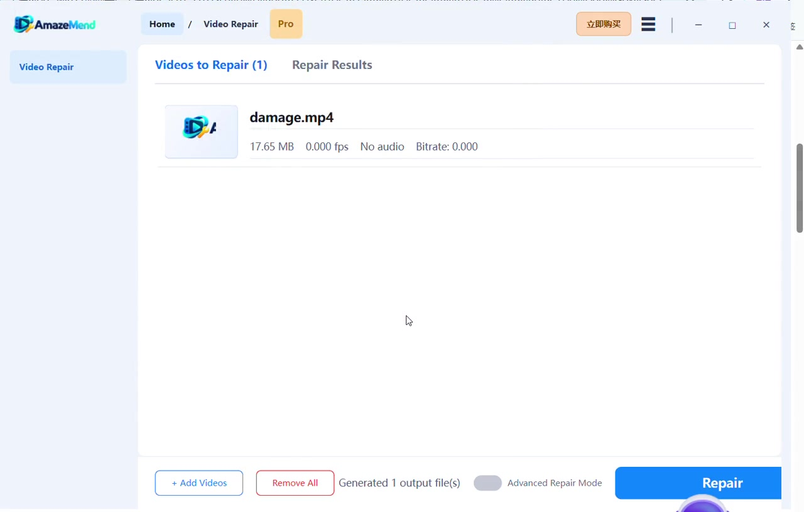

Video will not open
The player rejects the file, reports an error, or closes before playback begins.
AmazeMend helps make damaged, frozen, choppy, out-of-sync, or unplayable video files usable again. Add a file, run the repair locally, and watch a 30-second repaired preview before deciding whether to export the complete result.

Different symptoms can come from damaged containers, incomplete writes, interrupted transfers, or corrupted media data. AmazeMend provides a focused workflow for the problems below.
The player rejects the file, reports an error, or closes before playback begins.
The picture gets stuck, stops partway through, or jumps between damaged sections.
Frames stutter, break into artifacts, or display incorrectly after file damage.
Sound is absent, delayed, or no longer aligned with the picture.
A camera shutdown, failed copy, or unsafe device removal left the video incomplete.
Footage from an SD card, USB drive, camera, drone, or phone became unreadable.
Repair results depend on the file contents and extent of damage. AmazeMend does not modify or repair hardware or storage devices.

Actual repair testWatch damage.mp4 go from unreadable to playableSee the complete workflow and a 30-second clip from the repaired output. → Illustrative source-device scene
Illustrative source-device scene
Repair video files copied from digital cameras, action cameras, drones, dash cams, smartphones, SD cards, USB drives, hard drives, and computer storage.
The workflow stays visible and predictable from import through preview and export.
Choose one file or add several videos for a batch repair session.
Start with quick repair. If needed, use a playable sample from the same device for advanced repair.
Play up to 30 seconds of the repaired output to review picture, audio, timing, and continuity.
Choose a license only when you want to save the complete repaired video.
Drag videos into the desktop app, review the supported formats, and start repair without navigating a complicated editor.
Quick Repair handles the standard workflow. Advanced Repair can use a playable sample video recorded by the same device, or with matching format characteristics, to guide the repair.
Add the damaged file and start repair directly. This is the fastest path for common corruption and playback problems.
Provide a healthy sample video from the same source when quick repair cannot reconstruct enough of the damaged file.
Support includes popular camera, phone, drone, dash-cam, and desktop video containers.
Video repair happens in the Windows desktop application. Your video files are not uploaded to an online repair service.
Review up to 30 seconds of repaired playback before purchasing full-export access.
Choose monthly, yearly, or lifetime access when you are ready to save complete repaired files.
Download the Windows app, run a repair, and inspect the repaired preview at no charge.